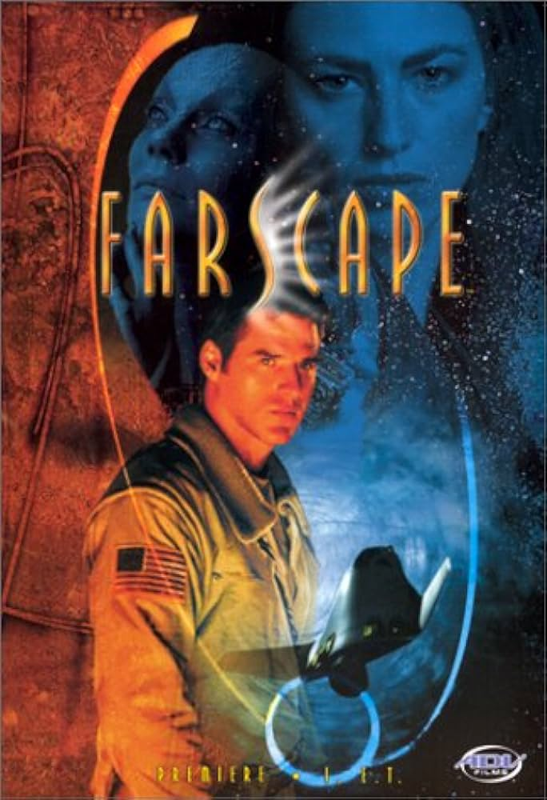
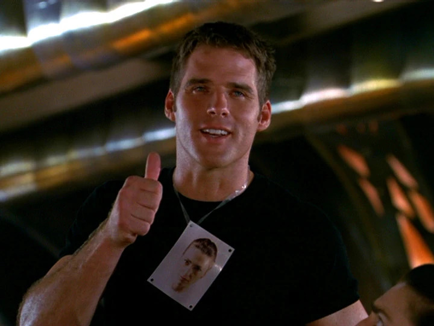
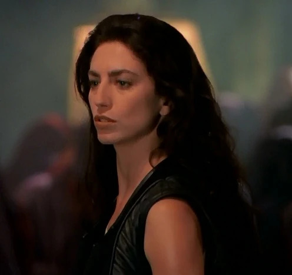
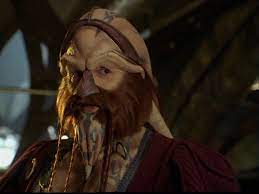

In "Farscape," astronaut John Crichton gets whipped through a wormhole to a far-off universe. Stranded light years from Earth, he shacks up with alien pals on Moya, a spaceship that's alive! Dodging new enemies, Crichton's all about finding a way back home. It's a wild space ride with a homecoming twist!
CharactersJohn Crichton Played by: Ben Browder Aeryn Sun  Played by: Claudia Black Ka D'Argo  Played by: Anthony Simcoe |